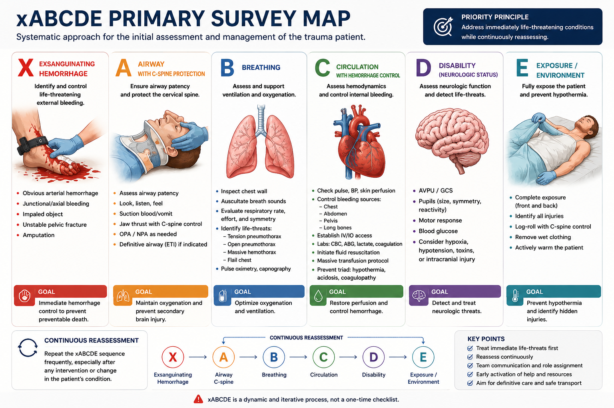
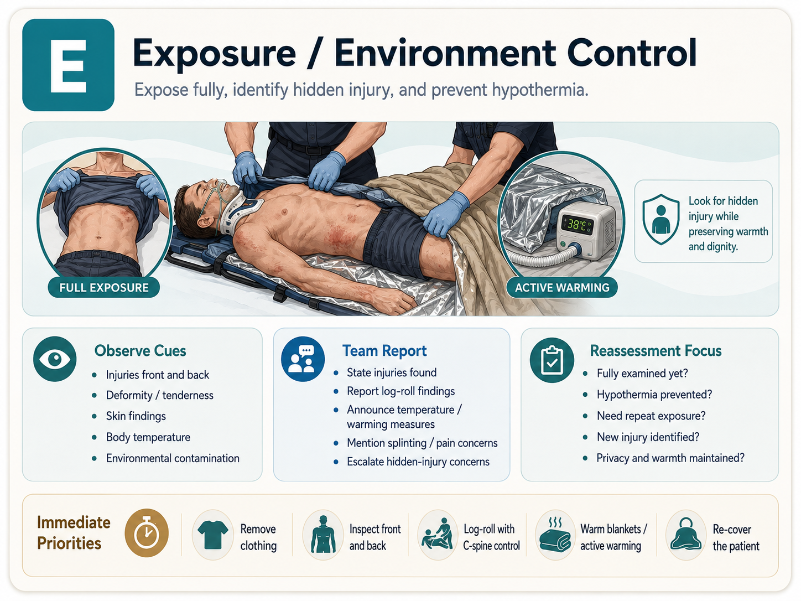

第一次进入创伤抢救室First day in the trauma bay
认清空间与角色，完成第一份团队简报。Read the room and roles; give your first team briefing.
开始学习Start learning从临床现场到课堂训练From clinical practice to classroom learning
先选你的学习层级，再用图解、病例与监督下技能训练，学会评估、协作和持续复评。Choose your level, then learn assessment, teamwork and reassessment through visuals, cases and supervised skills.
01 · 从这里开始Start here
02 · 共享心智模型Shared mental model
x 与 C 使用红色提示致命出血/循环威胁；A、B、D、E 使用深青，并始终保留字母。Red x and C indicate lethal bleeding/circulatory threats; A, B, D and E use deep teal with letters always visible.
03 · 主干课程Core courses
认清空间与角色，完成第一份团队简报。Read the room and roles; give your first team briefing.
开始学习Start learning
把威胁、信息缺口和复评放在同一张图里。Connect threats, information gaps and reassessment.
开始学习Start learning
辨认隐匿出血风险，连接骨盆带技能与 MDT。Recognize occult bleeding and connect binder skills with MDT care.
开始学习Start learning
从院前信息到归处交接，明确每一步责任。Connect pre-alert to disposition with clear ownership.
开始学习Start learning
四个学时，从单个患者走向系统资源与综合推演。Four lessons from one patient to system capacity and simulation.
开始学习Start learning
比较结构、稳定性与神经血管，学习成人十二单元。Compare anatomy, stability and neurovascular status across twelve adult units.
开始学习Start learning止血、TXA、输血策略与四个数字锚点。Hemorrhage control, TXA, transfusion and four numeric anchors.
二次/三次评估与漏诊Secondary/tertiary surveyAMPLE、头到脚查体和防遗漏闭环。AMPLE, head-to-toe examination and missed-injury prevention.
老年、儿童、孕妇与烧伤Special populations and burns关注普通成人路径不能覆盖的风险。Assess risks beyond routine adult pathways.
文书、告知与交接Documentation and handover把评估、沟通和未解问题留在记录里。Record assessment, communication and unresolved concerns.
04 · 监督下练习Supervised practice
每项按识别、准备、模型演练、效果确认和失败升级组织，配可打印 OSCE 核对单。Each skill covers recognition, preparation, trainer practice, effect confirmation and failure escalation, with a printable OSCE checklist.
05 · 病例与专题Cases and focused lessons
意识、瞳孔与继发性损伤预防。Consciousness, pupils and secondary injury prevention.
胸部创伤Chest trauma胸廓、呼吸趋势与胸部技能衔接。Chest movement, breathing trends and thoracic skills.
腹部损伤Abdominal injury隐匿出血、FAST 边界和连续查体。Occult bleeding, FAST limits and serial examination.
多发伤整合Integrated polytrauma解剖、生理和并行任务。Anatomy, physiology and parallel tasks.
开放性骨盆伤 MDT 复盘Open pelvic injury MDT debrief真实病例脱敏改编，逐步释放和风险复查。Adapted de-identified real case with staged release and risk review.
休克机制再评估Shock-mechanism reassessment识别锚定偏差，整合未解问题。Recognize anchoring and integrate unresolved concerns.
腹部持续出血复盘Ongoing abdominal hemorrhage debrief · 颈椎风险与髋脱位C-spine risk and hip dislocation
用于医学教育、课堂讨论和监督下模拟训练。真实患者的决策与操作由具备相应资质、授权的团队依据本地规范完成。For medical education, classroom discussion and supervised simulation. Real-patient decisions and procedures require appropriately credentialed and authorized teams following local policy.
查看来源、分层范围与质量治理View sources, tier scope and quality governance